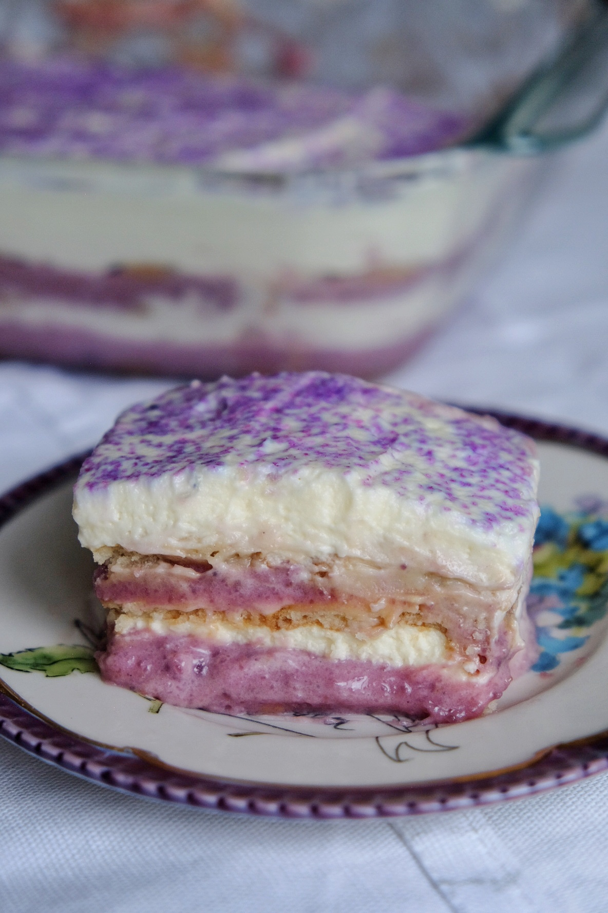

Ube-Misu

By: Jarelle Franchela Boac
This Filipino take on classic tiramisu is a light and yummy dessert perfect for any day! It is a no-bake, no fuss recipe,without the raw egg whites, and a great make ahead dessert.
This recipe takes some elements from this tiramisu from Sally's Baking Addiction. If you're interested in a classic tiramisu, check it out, as well!
Hope you enjoy, and make sure to follow our Instagram page @fourhungryasians so that you are notified everytime a new recipe is out!
Ingredients
Ube Spread
- ½ cup-⅔ cup condensed milk
- 1 can evaporated milk
- 1 tsp cornstarch
- ¼ cup nestle media crema table cream table cream
- 1 pack of ube powder/dehydrated ube (4oz packet from Giron Food Inc.)
Mascarpone Cream
- 1 cup heavy whipping cream
- 1 cup mascarpone at room temperature
- 1 teaspoon vanilla
- 2 large egg yolk
- 2 tbsp granulated sugar
Other Ingredients
- 1 box vanilla wafers/nilla wafers
- ⅓ cup of milk
- Lavender sanding sugar
Instructions
- Heat a stovetop pot over medium heat. With a heat proof spatula/spoon, mix the evaporated milk and nestle media crema table cream. Mix in the cornstarch then slowly mix in the powdered ube. The mixture will begin to thicken into a paste. Continue mixing well, scraping the sides of the pot, and then slowly add in the condensed milk a bit at a time. The vanilla wafers are very sweet, so if you don’t want a super sweet ube-misu, consider using only 1/2 cup of condensed milk.
- Once the condensed milk is fully combined into the ube spread, turn off the heat, remove the pot from the heat, and let the ube spread cool.
- While the ube spread is cooling, create the mascarpone. With a spatula, add the mascarpone to a large bowl and mix until it has loosed up and is smooth.
- Use a separate, heat proof bowl and place it over a pot of simmering water, making sure not to let the bottom of the bowl touch the water. With a heat proof whisk, carefully mix together the granulated sugar and the egg yolks, adding the egg yolks in one at a time.
- Once the egg yolks and sugar have turned into a bubbly mixture, nearing the texture of a runny custard, remove from the heat and pour it into your bowl of mascarpone, mixing it in.
- In a medium bowl with a handheld mixer, beat the whipped cream and vanilla together until it forms medium peaks, then carefully fold this into your mascarpone mixture.
- Now, assemble your ube-misu. Use a small shallow container and pour in it the ⅓ cup of milk. Quickly dip your nilla wafers one at a time into the milk and line in an 8x8 inch square pyrex, starting from the edges and working your way into the middle. This will create your base.
- Now divide your ube mixture into 2. Spread the first half over the wafers. Do the same for the mascarpone mixture. Repeat the process. The mascarpone should be the final layer.
- Sprinkle the lavender sanding sugar on top.
- Chill in the refrigerator for at least 5 hours or even overnight. Best served chilled!